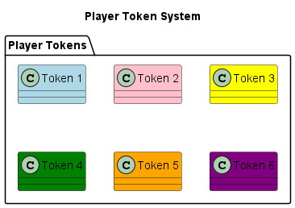

Player Module
This module contains the Player class that represents a player in the Property Tycoon game, managing player attributes, movement, and interactions.
Key Features
Player Representation: Visual and logical representation of game players
Property Management: Tracking of owned properties and development
Financial Transactions: Handling of money-related operations
Movement Control: Management of player position and animation
Jail Mechanics: Implementation of jail-related rules and decisions
AI Integration: Support for AI-controlled player behavior
Visual Feedback: Animation and highlighting for active players
Player Class
The Player class encapsulates all player-related functionality:
@enduml
Player Animation System
The Player module includes a sophisticated animation system for player movement and feedback:
![@startuml
title Player Animation System
start
:Request Player Movement;
:Generate Movement Path;
note right
Creates a sequence of positions
to animate smoothly around the board
end note
:Initialize Animation Variables;
note right
- move_start_position
- move_target_position
- move_progress = 0.0
- is_moving = true
end note
while (Animation in Progress?) is (Yes)
:Update move_progress;
:Calculate Current Position;
note right
Interpolates between start and target
based on move_progress
end note
:Apply Animation Effects;
note right
- Bounce effect
- Glow effect for active player
end note
:Render Player at Position;
if (move_progress >= 1.0) then (Yes)
:Complete Current Path Segment;
if (More Path Segments?) then (Yes)
:Move to Next Path Segment;
else (No)
:Animation Complete;
:is_moving = false;
endif
endif
endwhile
stop
@enduml](../_images/plantuml-48babc539b4369c54d8fd950fbf9513cc86014c3.png)
Financial Operations
The Player class handles various financial operations:
Payment Processing: Methods to handle payments to other players or the bank
Income Handling: Receiving money from various sources
Bankruptcy Detection: Determining when a player can no longer pay debts
Property Transactions: Buying properties and managing development costs
Asset Evaluation: Calculating total player worth including properties
Emergency Fund Raising: Mortgaging properties or selling houses to raise funds
AI Player Integration
The Player module provides special support for AI-controlled players:
AI controller association: Links to appropriate AI logic based on difficulty
Decision delegation: Forwards key decisions to AI controller
Visual differentiation: Distinct appearance for AI players
Automated actions: Handles AI-specific automated behaviors
Difficulty level support: Different behavior based on AI difficulty
Hard AI emotion system: Integration with the emotional state system
Common Operations
The Player class provides several key operations:
Movement: Moving players around the board with animation
Property Management: Buying, selling, and developing properties
Money Management: Tracking funds and conducting transactions
Jail Handling: Managing entry to and exit from jail
Visual Feedback: Providing visual cues about player state
Asset Tracking: Managing a player’s portfolio of properties
Player Tokens
The module implements a visual token system for player representation:

- class Player {
+token_image +token_name +player_number +load_player_image() +draw_player(screen, x, y)
T1 .down.> Player : used by T2 .down.> Player : used by T3 .down.> Player : used by T4 .down.> Player : used by T5 .down.> Player : used by T6 .down.> Player : used by
- note right of Player
Each player uses one token for visual representation on the board
end note
@enduml
AI Player Mechanism
The Player class includes specific mechanisms for handling AI players:
class “EasyAIPlayer” as Easy class “HardAIPlayer” as Hard
Player –> Easy : if ai_difficulty==”easy” Player –> Hard : if ai_difficulty==”hard”
- note right of Player
AI controller is initialized based on difficulty setting
end note
Player : +handle_jail_turn() Player : +buy_property(property) Easy : +handle_jail_strategy() Easy : +should_buy_property() Hard : +handle_jail_strategy() Hard : +should_buy_property()
- note left of Easy
Easy AI uses simple decision-making with fixed thresholds
end note
- note right of Hard
Hard AI uses advanced decision-making with emotional adjustments
end note
@enduml